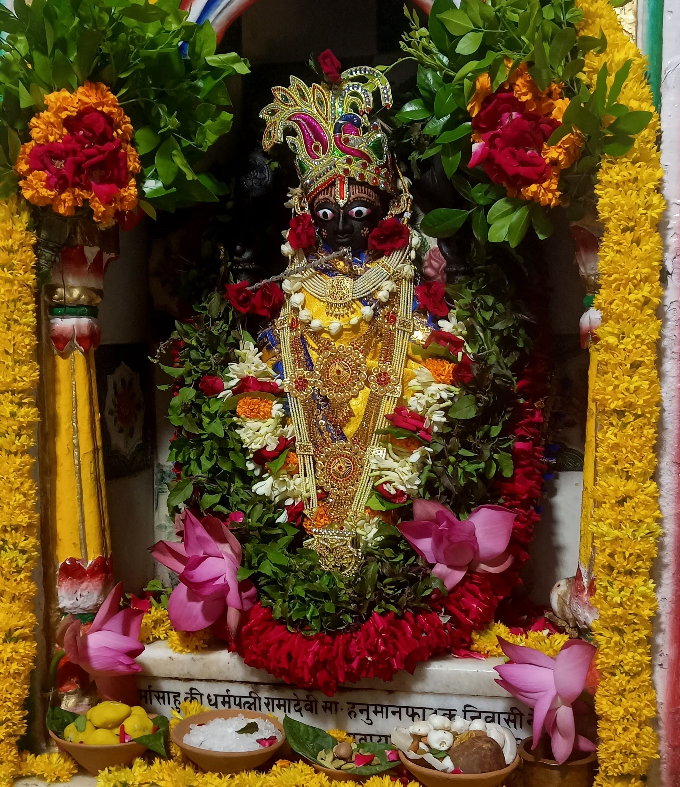
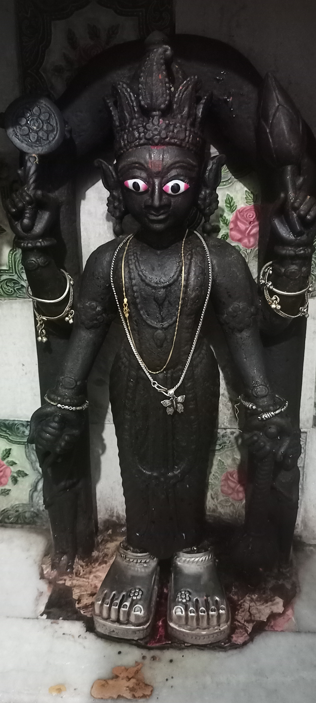

Welcome to Shree Madhusudan Bhagwan Ji Temple
मधुसूदनो वीरः विष्णुर्वीथीपतिः प्रभुः। श्रीधरः श्रीपतिः श्रीमान् श्रीनिवासः श्रीनिधिः श्रीविभावनः॥
Overview

About

Temple's Deities
Gallery
Contact Us
Address:
Pujarigan:
मधुसूदनो वीरः विष्णुर्वीथीपतिः प्रभुः। श्रीधरः श्रीपतिः श्रीमान् श्रीनिवासः श्रीनिधिः श्रीविभावनः॥


Address:
Pujarigan: